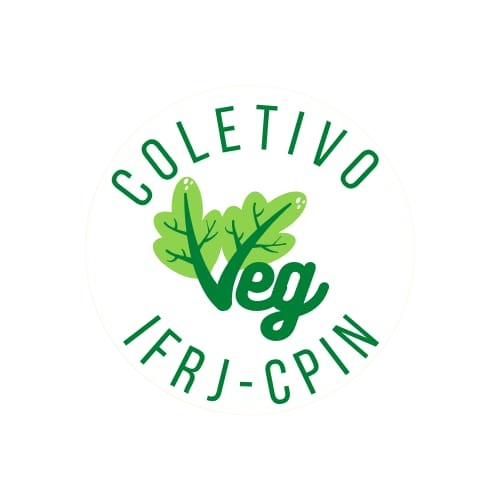

Direito à alimentação escolar: pensando as restrições alimentares
O projeto de pesquisa e extensão "Alimentação escolar como direito: Pensando as restrições alimentares", orientado pela professora Amanda Veloso Garcia e realizado pela aluna Bianca Berion, da turma 305, já está sendo desenvolvido desde o ano de 2024.
O projeto realiza anualmente a coleta de dados com a finalidade de criar um mapeamento dos alunos e servidores com restrições alimentares no IFRJ – Campus Pinheiral. O projeto também busca promover a conscientização sobre o direito à alimentação escolar, além de apresentar duas sugestões de café da manhã inclusivo.
Além disso, os dados coletados pelo projeto poderão ser utilizados pelo restaurante do campus, visando trazer melhorias na alimentação escolar, aproximar a comunidade acadêmica e contribuir para a redução de desperdícios.
Contribua com o projeto participando da pesquisa!
Conheça as sugestões


Acompanhe nossas redes sociais
Fique por dentro das novidades e acompanhe todas as atualizações do projeto.
Visitar nossas redes